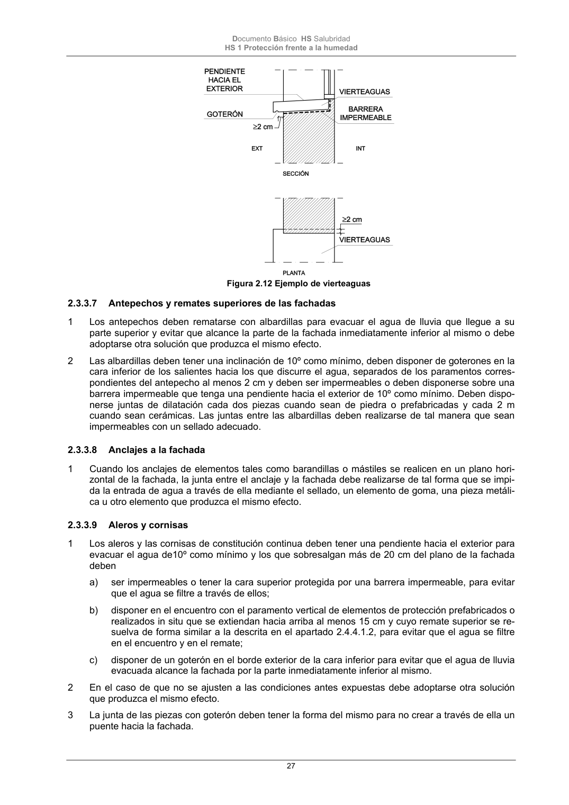

DB-HS · Página 27 · versión 2022-06-14
SHA256: 68df3caacc95f71aee2ec1ba7b2c65ae66155c21e3a8785521b8fdd4fd640d3b · página física 27 de 184 · métodos de encabezado
solo si están cotejados.
Formatos: Markdown · JSON de bloques · PDF p. 27 · imagen PNG
Documento Básico HS Salubridad HS 1 Protección frente a la humedad 27 Figura 2.12 Ejemplo de vierteaguas 2.3.3.7 Antepechos y remates superiores de las fachadas 1 Los antepechos deben rematarse con albardillas para evacuar el agua de lluvia que llegue a su parte superior y evitar que alcance la parte de la fachada inmediatamente inferior al mismo o debe adoptarse otra solución que produzca el mismo efecto. 2 Las albardillas deben tener una inclinación de 10º como mínimo, deben disponer de goterones en la cara inferior de los salientes hacia los que discurre el agua, separados de los paramentos corres- pondientes del antepecho al menos 2 cm y deben ser impermeables o deben disponerse sobre una barrera impermeable que tenga una pendiente hacia el exterior de 10º como mínimo. Deben dispo- nerse juntas de dilatación cada dos piezas cuando sean de piedra o prefabricadas y cada 2 m cuando sean cerámicas. Las juntas entre las albardillas deben realizarse de tal manera que sean impermeables con un sellado adecuado. 2.3.3.8 Anclajes a la fachada 1 Cuando los anclajes de elementos tales como barandillas o mástiles se realicen en un plano hori- zontal de la fachada, la junta entre el anclaje y la fachada debe realizarse de tal forma que se impi- da la entrada de agua a través de ella mediante el sellado, un elemento de goma, una pieza metáli- ca u otro elemento que produzca el mismo efecto. 2.3.3.9 Aleros y cornisas 1 Los aleros y las cornisas de constitución continua deben tener una pendiente hacia el exterior para evacuar el agua de10º como mínimo y los que sobresalgan más de 20 cm del plano de la fachada deben a) ser impermeables o tener la cara superior protegida por una barrera impermeable, para evitar que el agua se filtre a través de ellos; b) disponer en el encuentro con el paramento vertical de elementos de protección prefabricados o realizados in situ que se extiendan hacia arriba al menos 15 cm y cuyo remate superior se re- suelva de forma similar a la descrita en el apartado 2.4.4.1.2, para evitar que el agua se filtre en el encuentro y en el remate; c) disponer de un goterón en el borde exterior de la cara inferior para evitar que el agua de lluvia evacuada alcance la fachada por la parte inmediatamente inferior al mismo. 2 En el caso de que no se ajusten a las condiciones antes expuestas debe adoptarse otra solución que produzca el mismo efecto. 3 La junta de las piezas con goterón deben tener la forma del mismo para no crear a través de ella un puente hacia la fachada.
